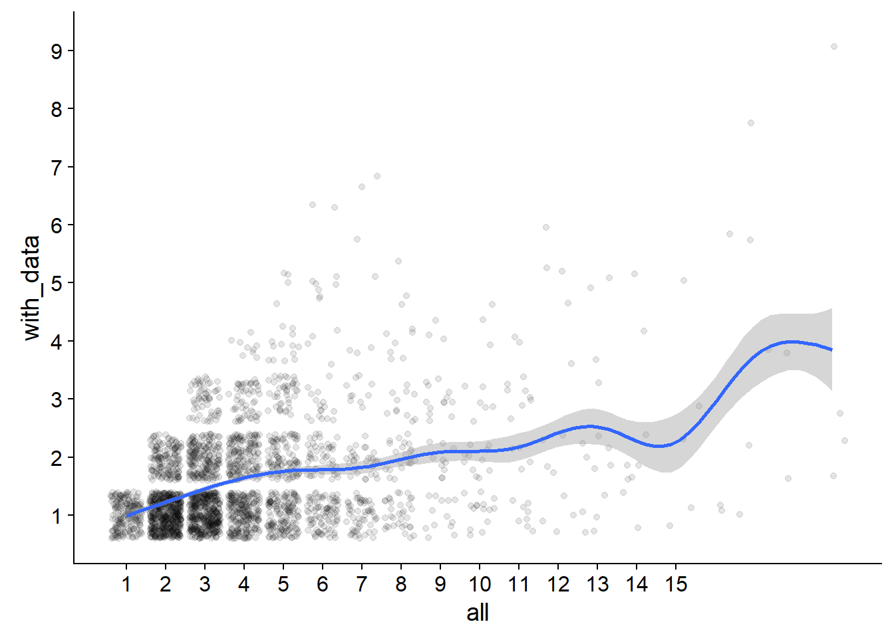
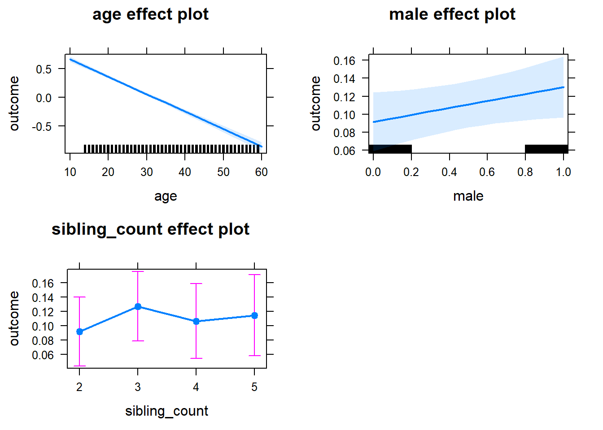
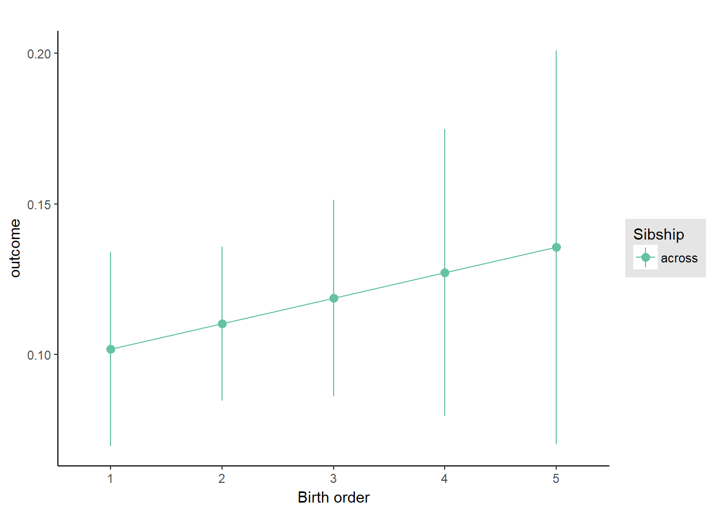
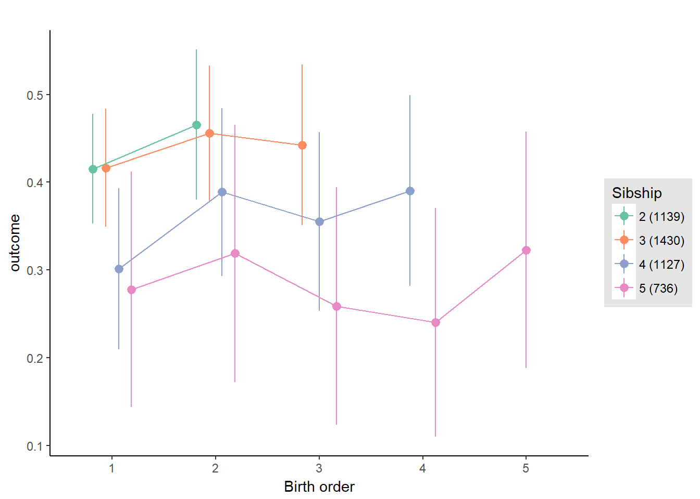
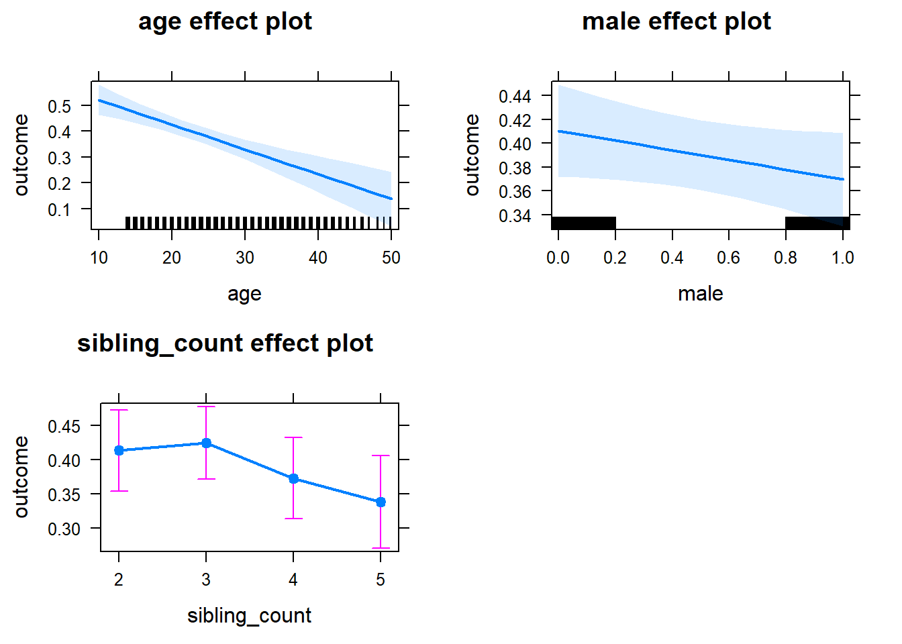
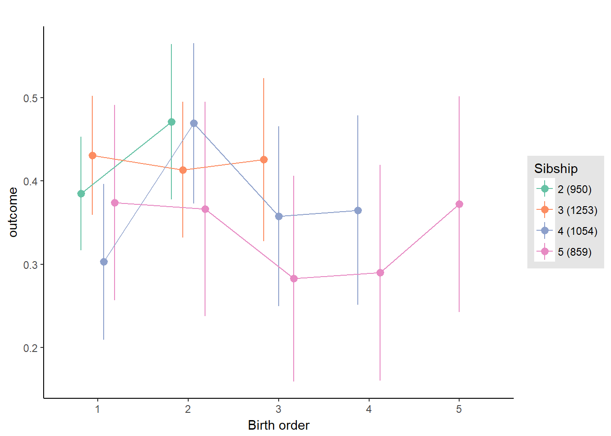
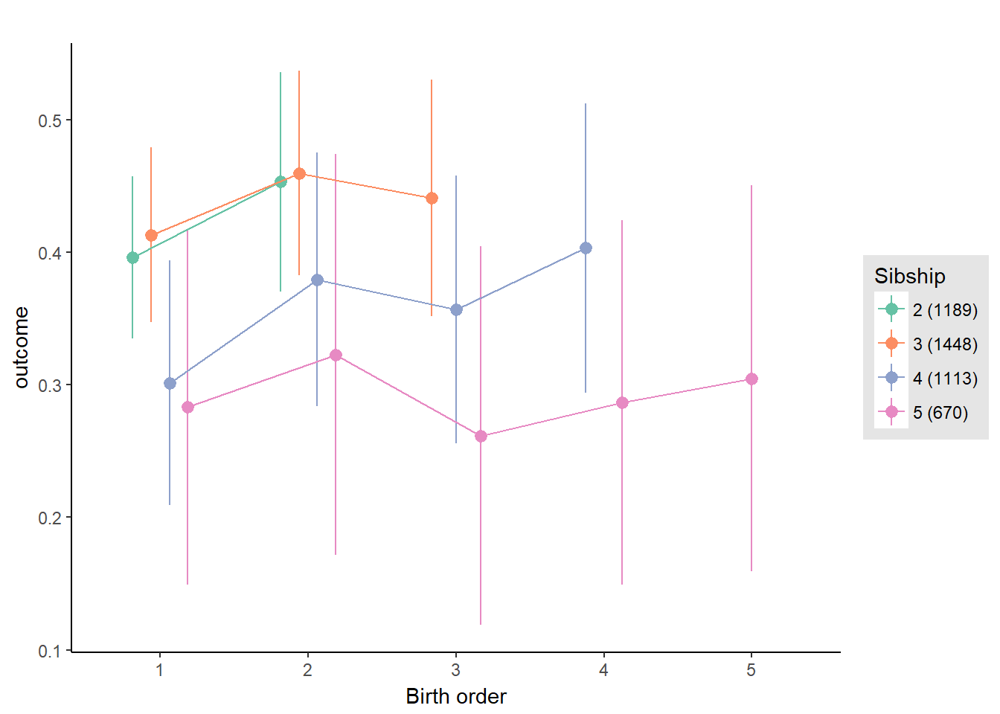
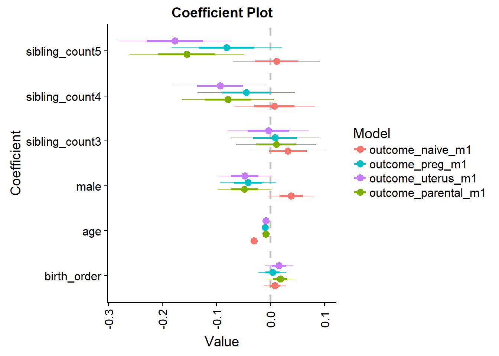

Birth Order Effects
Helper
source("0_helpers.R")## Warning: package 'rmarkdown' was built under R version 3.4.3## Warning: package 'knitr' was built under R version 3.4.3##
## Attaching package: 'formr'## The following object is masked from 'package:rmarkdown':
##
## word_document## Warning: package 'lubridate' was built under R version 3.4.3##
## Attaching package: 'lubridate'## The following object is masked from 'package:base':
##
## date## Warning: package 'stringr' was built under R version 3.4.3## Loading required package: carData## lattice theme set by effectsTheme()
## See ?effectsTheme for details.##
## Attaching package: 'data.table'## The following objects are masked from 'package:lubridate':
##
## hour, isoweek, mday, minute, month, quarter, second, wday, week, yday, year## The following objects are masked from 'package:formr':
##
## first, last## Loading required package: Matrix##
## Attaching package: 'lmerTest'## The following object is masked from 'package:lme4':
##
## lmer## The following object is masked from 'package:stats':
##
## step##
## Attaching package: 'cowplot'## The following object is masked from 'package:ggplot2':
##
## ggsave## Warning: package 'haven' was built under R version 3.4.3##
## Attaching package: 'psych'## The following objects are masked from 'package:ggplot2':
##
## %+%, alpha## This is lavaan 0.5-23.1097## lavaan is BETA software! Please report any bugs.##
## Attaching package: 'lavaan'## The following object is masked from 'package:psych':
##
## cor2cov## Loading required package: lattice## Loading required package: survival## Loading required package: Formula##
## Attaching package: 'Hmisc'## The following object is masked from 'package:psych':
##
## describe## The following objects are masked from 'package:base':
##
## format.pval, round.POSIXt, trunc.POSIXt, units## Warning: package 'tidyr' was built under R version 3.4.3##
## Attaching package: 'tidyr'## The following object is masked from 'package:Matrix':
##
## expand##
## Attaching package: 'dplyr'## The following objects are masked from 'package:Hmisc':
##
## combine, src, summarize## The following objects are masked from 'package:data.table':
##
## between, first, last## The following objects are masked from 'package:lubridate':
##
## intersect, setdiff, union## The following objects are masked from 'package:formr':
##
## first, last## The following objects are masked from 'package:stats':
##
## filter, lag## The following objects are masked from 'package:base':
##
## intersect, setdiff, setequal, union## Warning: package 'coefplot' was built under R version 3.4.3Load data
birthorder = readRDS("data/alldata_birthorder.rds")Data preparations
# For analyses we want to clean the dataset and get rid of all uninteresting data
birthorder = birthorder %>%
filter(!is.na(pidlink)) %>% # no individuals who are only known from the pregnancy file
filter(is.na(lifebirths) | lifebirths == 2) %>% # remove 7 and 2 individuals who are known as stillbirth or miscarriage but still have PID
select(-lifebirths) %>%
filter(!is.na(mother_pidlink)) %>%
select(-father_pidlink) %>%
filter(is.na(any_multiple_birth) | any_multiple_birth != 1) %>% # remove families with twins/triplets/..
filter(!is.na(birthorder_naive)) %>%
select(-starts_with("age_"), -wave, -any_multiple_birth, -multiple_birth) %>%
mutate(money_spent_smoking_log = if_else(is.na(money_spent_smoking_log) & ever_smoked == 0, 0, money_spent_smoking_log),
amount = if_else(is.na(amount) & ever_smoked == 0, 0, amount),
amount_still_smokers = if_else(is.na(amount_still_smokers) & still_smoking == 0, 0, amount_still_smokers),
birthyear = lubridate::year(birthdate))
# recode Factor Variable as Dummy Variable
birthorder = left_join(birthorder,
birthorder %>%
filter(!is.na(Category)) %>%
mutate(var = 1) %>%
select(pidlink, Category, var) %>%
spread(Category, var, fill = 0, sep = "_"), by = "pidlink") %>%
select(-Category)
# recode Factor Variable as Dummy Variable
birthorder = left_join(birthorder,
birthorder %>%
filter(!is.na(Sector)) %>%
mutate(var = 1) %>%
select(pidlink, Sector, var) %>%
spread(Sector, var, fill = 0, sep = "_"), by = "pidlink") %>%
select(-Sector)
### Variables
birthorder = birthorder %>%
mutate(
# center variables that are used for analysis
g_factor_2015_old = scale(g_factor_2015_old),
g_factor_2015_young = scale(g_factor_2015_young),
g_factor_2007_old = scale(g_factor_2007_old),
g_factor_2007_young = scale(g_factor_2007_young),
raven_2015_old = scale(raven_2015_old),
math_2015_old = scale(math_2015_old),
count_backwards = scale(count_backwards),
raven_2015_young = scale(raven_2015_young),
math_2015_young = scale(math_2015_young),
words_remembered_avg = scale(words_remembered_avg),
words_immediate = scale(words_immediate),
words_delayed = scale(words_delayed),
adaptive_numbering = scale(adaptive_numbering),
raven_2007_old = scale(raven_2007_old),
math_2007_old = scale(math_2007_old),
raven_2007_young = scale(raven_2007_young),
math_2007_young = scale(math_2007_young),
riskA = scale(riskA),
riskB = scale(riskB),
years_of_education_z = scale(years_of_education),
Total_score_highest_z = scale(Total_score_highest),
wage_last_month_z = scale(wage_last_month_log),
wage_last_year_z = scale(wage_last_year_log),
big5_ext = scale(big5_ext),
big5_con = scale(big5_con),
big5_agree = scale(big5_agree),
big5_open = scale(big5_open),
big5_neu = scale(big5_neu),
attended_school = as.integer(attended_school)
)
qplot(birthorder$male)## `stat_bin()` using `bins = 30`. Pick better value with `binwidth`.
qplot(birthorder$g_factor_2015_old)## `stat_bin()` using `bins = 30`. Pick better value with `binwidth`.## Warning: Removed 24929 rows containing non-finite values (stat_bin).
qplot(birthorder$g_factor_2015_old)## `stat_bin()` using `bins = 30`. Pick better value with `binwidth`.## Warning: Removed 24929 rows containing non-finite values (stat_bin).
### Birthorder and Sibling Count
birthorder = birthorder %>%
mutate(
# birthorder as factors with levels of 1, 2, 3, 4, 5,
birthorder_naive_factor = as.character(birthorder_naive),
birthorder_naive_factor = ifelse(birthorder_naive > 5, NA,
birthorder_naive_factor),
birthorder_naive_factor = factor(birthorder_naive_factor,
levels = c("1","2","3","4","5")),
sibling_count_naive_factor = as.character(sibling_count_naive),
sibling_count_naive_factor = ifelse(sibling_count_naive > 5, NA,
sibling_count_naive_factor),
sibling_count_naive_factor = factor(sibling_count_naive_factor,
levels = c("2","3","4","5")),
birthorder_uterus_alive_factor = as.character(birthorder_uterus_alive),
birthorder_uterus_alive_factor = ifelse(birthorder_uterus_alive > 5, NA,
birthorder_uterus_alive_factor),
birthorder_uterus_alive_factor = factor(birthorder_uterus_alive_factor,
levels = c("1","2","3","4","5")),
sibling_count_uterus_alive_factor = as.character(sibling_count_uterus_alive),
sibling_count_uterus_alive_factor = ifelse(sibling_count_uterus_alive > 5, NA,
sibling_count_uterus_alive_factor),
sibling_count_uterus_alive_factor = factor(sibling_count_uterus_alive_factor,
levels = c("2","3","4","5")),
birthorder_uterus_preg_factor = as.character(birthorder_uterus_preg),
birthorder_uterus_preg_factor = ifelse(birthorder_uterus_preg > 5, NA,
birthorder_uterus_preg_factor),
birthorder_uterus_preg_factor = factor(birthorder_uterus_preg_factor,
levels = c("1","2","3","4","5")),
sibling_count_uterus_preg_factor = as.character(sibling_count_uterus_preg),
sibling_count_uterus_preg_factor = ifelse(sibling_count_uterus_preg > 5, NA,
sibling_count_uterus_preg_factor),
sibling_count_uterus_preg_factor = factor(sibling_count_uterus_preg_factor,
levels = c("2","3","4","5")),
birthorder_genes_factor = as.character(birthorder_genes),
birthorder_genes_factor = ifelse(birthorder_genes >5 , NA, birthorder_genes_factor),
birthorder_genes_factor = factor(birthorder_genes_factor,
levels = c("1","2","3","4","5")),
sibling_count_genes_factor = as.character(sibling_count_genes),
sibling_count_genes_factor = ifelse(sibling_count_genes >5 , NA,
sibling_count_genes_factor),
sibling_count_genes_factor = factor(sibling_count_genes_factor,
levels = c("2","3","4","5")),
# interaction birthorder * siblingcout for each birthorder
count_birthorder_naive =
factor(str_replace(as.character(interaction(birthorder_naive_factor, sibling_count_naive_factor)),
"\\.", "/"),
levels = c("1/2","2/2", "1/3", "2/3",
"3/3", "1/4", "2/4", "3/4", "4/4",
"1/5", "2/5", "3/5", "4/5",
"5/5")),
count_birthorder_uterus_alive =
factor(str_replace(as.character(interaction(birthorder_uterus_alive_factor, sibling_count_uterus_alive_factor)),
"\\.", "/"),
levels = c("1/2","2/2", "1/3", "2/3",
"3/3", "1/4", "2/4", "3/4", "4/4",
"1/5", "2/5", "3/5", "4/5", "5/5")),
count_birthorder_uterus_preg =
factor(str_replace(as.character(interaction(birthorder_uterus_preg_factor, sibling_count_uterus_preg_factor)),
"\\.", "/"),
levels = c("1/2","2/2", "1/3", "2/3",
"3/3", "1/4", "2/4", "3/4", "4/4",
"1/5", "2/5", "3/5", "4/5", "5/5")),
count_birthorder_genes =
factor(str_replace(as.character(interaction(birthorder_genes_factor, sibling_count_genes_factor)), "\\.", "/"),
levels = c("1/2","2/2", "1/3", "2/3",
"3/3", "1/4", "2/4", "3/4", "4/4",
"1/5", "2/5", "3/5", "4/5", "5/5")))
birthorder <- birthorder %>%
mutate(sibling_count = sibling_count_naive_factor,
birth_order_nonlinear = birthorder_naive_factor,
birth_order = birthorder_naive,
count_birth_order = count_birthorder_naive)How many siblings with data do we retain in each family?
crosstabs(~is.na(birthorder$birthorder_naive) + is.na(birthorder$g_factor_2015_old))| FALSE | TRUE |
|---|---|
| 14688 | 24929 |
crosstabs(~is.na(birthorder$birthorder_uterus_preg) + is.na(birthorder$g_factor_2015_old))| FALSE | TRUE |
|---|---|
| 6063 | 15137 |
| 8625 | 9792 |
birthorder %>% filter(!is.na(birthorder_naive), !is.na(g_factor_2015_old)) %>% group_by(mother_pidlink) %>% summarise(with_data = n(), all = mean(sibling_count_uterus_preg)) -> counts
birthorder %>% filter(!is.na(birthorder_naive)) %>% group_by(mother_pidlink) %>% summarise(with_data = n(), all = mean(sibling_count_uterus_preg)) -> counts1In our test sample families with an average size of 3.9056 siblings, we retain 1.7765.
In the original sample families with an average size of 2.4873 siblings, we retain 2.2088.
ggplot(counts, aes(all, with_data)) + geom_jitter(alpha = 0.1) + geom_smooth() + scale_x_continuous(breaks=1:15) + scale_y_continuous(breaks=1:15)## `geom_smooth()` using method = 'gam'## Warning: Removed 5451 rows containing non-finite values (stat_smooth).## Warning: Removed 5451 rows containing missing values (geom_point).
Intelligence
g-factor 2015 old
birthorder <- birthorder %>% mutate(outcome = g_factor_2015_old)
model = lmer(outcome ~ birth_order + age + male + sibling_count + (1 | mother_pidlink),
data = birthorder)
compare_birthorder_specs(model)Naive birth order
outcome_naive_m1 <- update(m2_birthorder_linear, data = birthorder %>%
mutate(sibling_count = sibling_count_naive_factor,
birth_order_nonlinear = birthorder_naive_factor,
birth_order = birthorder_naive,
count_birth_order = count_birthorder_naive) %>%
filter(sibling_count != "1"))
compare_models_markdown(outcome_naive_m1)Basic Model
Model Summary
m1_covariates_only <- update(m2_birthorder_linear, formula = . ~ . - birth_order)
summary(m1_covariates_only)## Linear mixed model fit by REML ['lmerMod']
## Formula: outcome ~ age + male + sibling_count + (1 | mother_pidlink)
## Data: birthorder %>% mutate(sibling_count = sibling_count_naive_factor,
## birth_order_nonlinear = birthorder_naive_factor, birth_order = birthorder_naive,
## count_birth_order = count_birthorder_naive) %>% filter(sibling_count != "1")
##
## REML criterion at convergence: 18496
##
## Scaled residuals:
## Min 1Q Median 3Q Max
## -3.180 -0.546 0.028 0.582 3.051
##
## Random effects:
## Groups Name Variance Std.Dev.
## mother_pidlink (Intercept) 0.369 0.608
## Residual 0.539 0.734
## Number of obs: 6915, groups: mother_pidlink, 4494
##
## Fixed effects:
## Estimate Std. Error t value
## (Intercept) 0.92444 0.04334 21.33
## age -0.03025 0.00117 -25.88
## male 0.03852 0.02129 1.81
## sibling_count3 0.03530 0.03484 1.01
## sibling_count4 0.01460 0.03627 0.40
## sibling_count5 0.02276 0.03792 0.60
##
## Correlation of Fixed Effects:
## (Intr) age male sbln_3 sbln_4
## age -0.793
## male -0.251 0.027
## siblng_cnt3 -0.455 0.076 -0.005
## siblng_cnt4 -0.443 0.082 -0.012 0.480
## siblng_cnt5 -0.417 0.065 0.005 0.458 0.441Coefficient Plot
plot(allEffects(m1_covariates_only))
Add Birth Order Linear
Model Summary
summary(m2_birthorder_linear)## Linear mixed model fit by REML ['lmerMod']
## Formula: outcome ~ birth_order + age + male + sibling_count + (1 | mother_pidlink)
## Data: birthorder %>% mutate(sibling_count = sibling_count_naive_factor,
## birth_order_nonlinear = birthorder_naive_factor, birth_order = birthorder_naive,
## count_birth_order = count_birthorder_naive) %>% filter(sibling_count != "1")
##
## REML criterion at convergence: 18503
##
## Scaled residuals:
## Min 1Q Median 3Q Max
## -3.168 -0.543 0.028 0.578 3.058
##
## Random effects:
## Groups Name Variance Std.Dev.
## mother_pidlink (Intercept) 0.369 0.607
## Residual 0.540 0.735
## Number of obs: 6915, groups: mother_pidlink, 4494
##
## Fixed effects:
## Estimate Std. Error t value
## (Intercept) 0.90773 0.04780 18.99
## birth_order 0.00845 0.01018 0.83
## age -0.03007 0.00119 -25.28
## male 0.03834 0.02129 1.80
## sibling_count3 0.03254 0.03499 0.93
## sibling_count4 0.00768 0.03721 0.21
## sibling_count5 0.01148 0.04028 0.29
##
## Correlation of Fixed Effects:
## (Intr) brth_r age male sbln_3 sbln_4
## birth_order -0.422
## age -0.784 0.185
## male -0.224 -0.009 0.024
## siblng_cnt3 -0.371 -0.095 0.056 -0.004
## siblng_cnt4 -0.297 -0.224 0.037 -0.010 0.487
## siblng_cnt5 -0.213 -0.338 -0.002 0.008 0.462 0.480Coefficient Plot
plot_birthorder(m2_birthorder_linear, separate = FALSE, ylimits = ylimits)
Add Birth Order Factor
Model Summary
m3_birthorder_nonlinear = update(m1_covariates_only, formula = . ~ . + birth_order_nonlinear)
summary(m3_birthorder_nonlinear)## Linear mixed model fit by REML ['lmerMod']
## Formula: outcome ~ age + male + sibling_count + (1 | mother_pidlink) + birth_order_nonlinear
## Data: birthorder %>% mutate(sibling_count = sibling_count_naive_factor,
## birth_order_nonlinear = birthorder_naive_factor, birth_order = birthorder_naive,
## count_birth_order = count_birthorder_naive) %>% filter(sibling_count != "1")
##
## REML criterion at convergence: 18513
##
## Scaled residuals:
## Min 1Q Median 3Q Max
## -3.167 -0.541 0.027 0.578 3.057
##
## Random effects:
## Groups Name Variance Std.Dev.
## mother_pidlink (Intercept) 0.368 0.607
## Residual 0.540 0.735
## Number of obs: 6915, groups: mother_pidlink, 4494
##
## Fixed effects:
## Estimate Std. Error t value
## (Intercept) 0.91209 0.04502 20.26
## age -0.03005 0.00119 -25.26
## male 0.03836 0.02130 1.80
## sibling_count3 0.03394 0.03534 0.96
## sibling_count4 0.01434 0.03761 0.38
## sibling_count5 0.01114 0.04046 0.28
## birth_order_nonlinear2 0.01878 0.02430 0.77
## birth_order_nonlinear3 0.01307 0.03086 0.42
## birth_order_nonlinear4 -0.00207 0.04013 -0.05
## birth_order_nonlinear5 0.08047 0.05803 1.39
##
## Correlation of Fixed Effects:
## (Intr) age male sbln_3 sbln_4 sbln_5 brt__2 brt__3 brt__4
## age -0.786
## male -0.239 0.025
## siblng_cnt3 -0.414 0.058 -0.004
## siblng_cnt4 -0.370 0.039 -0.009 0.489
## siblng_cnt5 -0.314 -0.005 0.008 0.457 0.472
## brth_rdr_n2 -0.234 0.053 -0.009 -0.028 -0.060 -0.063
## brth_rdr_n3 -0.153 0.108 -0.007 -0.165 -0.204 -0.217 0.362
## brth_rdr_n4 -0.159 0.135 -0.009 -0.037 -0.218 -0.233 0.291 0.310
## brth_rdr_n5 -0.153 0.147 -0.003 -0.025 -0.061 -0.270 0.206 0.232 0.232Coefficient Plot
plot_birthorder(m3_birthorder_nonlinear, separate = FALSE, ylimits = ylimits)Add Interaction
Model Summary
m4_interaction = update(m3_birthorder_nonlinear, formula = . ~ . - birth_order_nonlinear - sibling_count + count_birth_order)
summary(m4_interaction)## Linear mixed model fit by REML ['lmerMod']
## Formula: outcome ~ age + male + (1 | mother_pidlink) + count_birth_order
## Data: birthorder %>% mutate(sibling_count = sibling_count_naive_factor,
## birth_order_nonlinear = birthorder_naive_factor, birth_order = birthorder_naive,
## count_birth_order = count_birthorder_naive) %>% filter(sibling_count != "1")
##
## REML criterion at convergence: 18529
##
## Scaled residuals:
## Min 1Q Median 3Q Max
## -3.095 -0.542 0.027 0.576 3.043
##
## Random effects:
## Groups Name Variance Std.Dev.
## mother_pidlink (Intercept) 0.369 0.607
## Residual 0.540 0.735
## Number of obs: 6915, groups: mother_pidlink, 4494
##
## Fixed effects:
## Estimate Std. Error t value
## (Intercept) 0.923258 0.046527 19.84
## age -0.030017 0.001190 -25.22
## male 0.038773 0.021300 1.82
## count_birth_order2/2 -0.015768 0.041928 -0.38
## count_birth_order1/3 0.031750 0.043092 0.74
## count_birth_order2/3 0.030939 0.047444 0.65
## count_birth_order3/3 0.025387 0.052478 0.48
## count_birth_order1/4 0.007622 0.048748 0.16
## count_birth_order2/4 0.044289 0.050875 0.87
## count_birth_order3/4 0.000557 0.054429 0.01
## count_birth_order4/4 -0.030161 0.057175 -0.53
## count_birth_order1/5 -0.065954 0.054240 -1.22
## count_birth_order2/5 0.039302 0.056577 0.69
## count_birth_order3/5 0.038540 0.058005 0.66
## count_birth_order4/5 0.032546 0.061003 0.53
## count_birth_order5/5 0.081497 0.062327 1.31##
## Correlation matrix not shown by default, as p = 16 > 12.
## Use print(x, correlation=TRUE) or
## vcov(x) if you need itCoefficient Plot
plot_birthorder(m4_interaction, ylimits = ylimits)
Model Comparison
###### Model 1 - Model 2
anova(m1_covariates_only, m2_birthorder_linear, m3_birthorder_nonlinear, m4_interaction)## refitting model(s) with ML (instead of REML)| Df | AIC | BIC | logLik | deviance | Chisq | Chi Df | Pr(>Chisq) |
|---|---|---|---|---|---|---|---|
| 8 | 18473 | 18527 | -9228 | 18457 | NA | NA | NA |
| 9 | 18474 | 18535 | -9228 | 18456 | 0.6899 | 1 | 0.4062 |
| 12 | 18478 | 18560 | -9227 | 18454 | 1.763 | 3 | 0.623 |
| 18 | 18485 | 18608 | -9224 | 18449 | 5.429 | 6 | 0.4901 |
Maternal birth order
outcome_uterus_m1 <- update(m2_birthorder_linear, data = birthorder %>%
mutate(sibling_count = sibling_count_uterus_alive_factor,
birth_order_nonlinear = birthorder_uterus_alive_factor,
birth_order = birthorder_uterus_alive,
count_birth_order = count_birthorder_uterus_alive) %>%
filter(sibling_count != "1"))
compare_models_markdown(outcome_uterus_m1)Basic Model
Model Summary
m1_covariates_only <- update(m2_birthorder_linear, formula = . ~ . - birth_order)
summary(m1_covariates_only)## Linear mixed model fit by REML ['lmerMod']
## Formula: outcome ~ age + male + sibling_count + (1 | mother_pidlink)
## Data: birthorder %>% mutate(sibling_count = sibling_count_uterus_alive_factor,
## birth_order_nonlinear = birthorder_uterus_alive_factor, birth_order = birthorder_uterus_alive,
## count_birth_order = count_birthorder_uterus_alive) %>% filter(sibling_count != "1")
##
## REML criterion at convergence: 11212
##
## Scaled residuals:
## Min 1Q Median 3Q Max
## -3.569 -0.558 0.035 0.583 3.022
##
## Random effects:
## Groups Name Variance Std.Dev.
## mother_pidlink (Intercept) 0.270 0.520
## Residual 0.495 0.703
## Number of obs: 4432, groups: mother_pidlink, 3045
##
## Fixed effects:
## Estimate Std. Error t value
## (Intercept) 0.65650 0.05030 13.05
## age -0.00854 0.00186 -4.58
## male -0.04672 0.02503 -1.87
## sibling_count3 0.00378 0.03725 0.10
## sibling_count4 -0.07551 0.04075 -1.85
## sibling_count5 -0.14755 0.04683 -3.15
##
## Correlation of Fixed Effects:
## (Intr) age male sbln_3 sbln_4
## age -0.805
## male -0.279 0.043
## siblng_cnt3 -0.345 -0.060 -0.007
## siblng_cnt4 -0.229 -0.163 -0.005 0.496
## siblng_cnt5 -0.171 -0.179 -0.001 0.434 0.416Coefficient Plot
plot(allEffects(m1_covariates_only))Add Birth Order Linear
Model Summary
summary(m2_birthorder_linear)## Linear mixed model fit by REML ['lmerMod']
## Formula: outcome ~ birth_order + age + male + sibling_count + (1 | mother_pidlink)
## Data: birthorder %>% mutate(sibling_count = sibling_count_uterus_alive_factor,
## birth_order_nonlinear = birthorder_uterus_alive_factor, birth_order = birthorder_uterus_alive,
## count_birth_order = count_birthorder_uterus_alive) %>% filter(sibling_count != "1")
##
## REML criterion at convergence: 11218
##
## Scaled residuals:
## Min 1Q Median 3Q Max
## -3.563 -0.555 0.031 0.586 2.998
##
## Random effects:
## Groups Name Variance Std.Dev.
## mother_pidlink (Intercept) 0.269 0.519
## Residual 0.495 0.704
## Number of obs: 4432, groups: mother_pidlink, 3045
##
## Fixed effects:
## Estimate Std. Error t value
## (Intercept) 0.62509 0.05638 11.09
## birth_order 0.01588 0.01289 1.23
## age -0.00804 0.00191 -4.22
## male -0.04731 0.02504 -1.89
## sibling_count3 -0.00381 0.03775 -0.10
## sibling_count4 -0.09315 0.04319 -2.16
## sibling_count5 -0.17674 0.05247 -3.37
##
## Correlation of Fixed Effects:
## (Intr) brth_r age male sbln_3 sbln_4
## birth_order -0.452
## age -0.798 0.212
## male -0.240 -0.019 0.038
## siblng_cnt3 -0.229 -0.164 -0.092 -0.004
## siblng_cnt4 -0.043 -0.332 -0.221 0.001 0.516
## siblng_cnt5 0.068 -0.452 -0.251 0.007 0.456 0.500Coefficient Plot
plot_birthorder(m2_birthorder_linear, separate = FALSE, ylimits = ylimits)Add Birth Order Factor
Model Summary
m3_birthorder_nonlinear = update(m1_covariates_only, formula = . ~ . + birth_order_nonlinear)
summary(m3_birthorder_nonlinear)## Linear mixed model fit by REML ['lmerMod']
## Formula: outcome ~ age + male + sibling_count + (1 | mother_pidlink) + birth_order_nonlinear
## Data: birthorder %>% mutate(sibling_count = sibling_count_uterus_alive_factor,
## birth_order_nonlinear = birthorder_uterus_alive_factor, birth_order = birthorder_uterus_alive,
## count_birth_order = count_birthorder_uterus_alive) %>% filter(sibling_count != "1")
##
## REML criterion at convergence: 11226
##
## Scaled residuals:
## Min 1Q Median 3Q Max
## -3.553 -0.551 0.035 0.592 3.025
##
## Random effects:
## Groups Name Variance Std.Dev.
## mother_pidlink (Intercept) 0.269 0.519
## Residual 0.495 0.704
## Number of obs: 4432, groups: mother_pidlink, 3045
##
## Fixed effects:
## Estimate Std. Error t value
## (Intercept) 0.63070 0.05231 12.06
## age -0.00814 0.00191 -4.26
## male -0.04664 0.02504 -1.86
## sibling_count3 -0.00228 0.03819 -0.06
## sibling_count4 -0.08659 0.04370 -1.98
## sibling_count5 -0.16988 0.05318 -3.19
## birth_order_nonlinear2 0.05318 0.02878 1.85
## birth_order_nonlinear3 0.02589 0.03687 0.70
## birth_order_nonlinear4 0.03481 0.04987 0.70
## birth_order_nonlinear5 0.07979 0.07654 1.04
##
## Correlation of Fixed Effects:
## (Intr) age male sbln_3 sbln_4 sbln_5 brt__2 brt__3 brt__4
## age -0.802
## male -0.265 0.037
## siblng_cnt3 -0.287 -0.085 -0.004
## siblng_cnt4 -0.134 -0.219 0.004 0.513
## siblng_cnt5 -0.052 -0.255 0.008 0.433 0.480
## brth_rdr_n2 -0.224 0.058 0.004 -0.080 -0.104 -0.085
## brth_rdr_n3 -0.157 0.121 -0.011 -0.221 -0.272 -0.256 0.368
## brth_rdr_n4 -0.187 0.182 -0.025 -0.081 -0.311 -0.334 0.282 0.331
## brth_rdr_n5 -0.152 0.154 -0.004 -0.057 -0.123 -0.387 0.180 0.223 0.273Coefficient Plot
plot_birthorder(m3_birthorder_nonlinear, separate = FALSE, ylimits = ylimits)
Add Interaction
Model Summary
m4_interaction = update(m3_birthorder_nonlinear, formula = . ~ . - birth_order_nonlinear - sibling_count + count_birth_order)
summary(m4_interaction)## Linear mixed model fit by REML ['lmerMod']
## Formula: outcome ~ age + male + (1 | mother_pidlink) + count_birth_order
## Data: birthorder %>% mutate(sibling_count = sibling_count_uterus_alive_factor,
## birth_order_nonlinear = birthorder_uterus_alive_factor, birth_order = birthorder_uterus_alive,
## count_birth_order = count_birthorder_uterus_alive) %>% filter(sibling_count != "1")
##
## REML criterion at convergence: 11244
##
## Scaled residuals:
## Min 1Q Median 3Q Max
## -3.557 -0.554 0.030 0.586 3.075
##
## Random effects:
## Groups Name Variance Std.Dev.
## mother_pidlink (Intercept) 0.268 0.518
## Residual 0.497 0.705
## Number of obs: 4432, groups: mother_pidlink, 3045
##
## Fixed effects:
## Estimate Std. Error t value
## (Intercept) 0.63072 0.05382 11.72
## age -0.00808 0.00191 -4.23
## male -0.04698 0.02507 -1.87
## count_birth_order2/2 0.05026 0.05008 1.00
## count_birth_order1/3 0.00121 0.04672 0.03
## count_birth_order2/3 0.04050 0.05041 0.80
## count_birth_order3/3 0.02718 0.05611 0.48
## count_birth_order1/4 -0.11393 0.05701 -2.00
## count_birth_order2/4 -0.02659 0.05856 -0.45
## count_birth_order3/4 -0.06004 0.06114 -0.98
## count_birth_order4/4 -0.02491 0.06373 -0.39
## count_birth_order1/5 -0.13742 0.07592 -1.81
## count_birth_order2/5 -0.09646 0.08161 -1.18
## count_birth_order3/5 -0.15645 0.07631 -2.05
## count_birth_order4/5 -0.17504 0.07376 -2.37
## count_birth_order5/5 -0.09238 0.07560 -1.22##
## Correlation matrix not shown by default, as p = 16 > 12.
## Use print(x, correlation=TRUE) or
## vcov(x) if you need itCoefficient Plot
plot_birthorder(m4_interaction, ylimits = ylimits)
Model Comparison
###### Model 1 - Model 2
anova(m1_covariates_only, m2_birthorder_linear, m3_birthorder_nonlinear, m4_interaction)## refitting model(s) with ML (instead of REML)| Df | AIC | BIC | logLik | deviance | Chisq | Chi Df | Pr(>Chisq) |
|---|---|---|---|---|---|---|---|
| 8 | 11191 | 11242 | -5588 | 11175 | NA | NA | NA |
| 9 | 11192 | 11249 | -5587 | 11174 | 1.52 | 1 | 0.2177 |
| 12 | 11195 | 11272 | -5586 | 11171 | 2.434 | 3 | 0.4874 |
| 18 | 11206 | 11321 | -5585 | 11170 | 1.562 | 6 | 0.9553 |
Maternal pregnancy order
outcome_preg_m1 <- update(m2_birthorder_linear, data = birthorder %>%
mutate(sibling_count = sibling_count_uterus_preg_factor,
birth_order_nonlinear = birthorder_uterus_preg_factor,
birth_order = birthorder_uterus_preg,
count_birth_order = count_birthorder_uterus_preg
) %>%
filter(sibling_count != "1"))
compare_models_markdown(outcome_preg_m1)Basic Model
Model Summary
m1_covariates_only <- update(m2_birthorder_linear, formula = . ~ . - birth_order)
summary(m1_covariates_only)## Linear mixed model fit by REML ['lmerMod']
## Formula: outcome ~ age + male + sibling_count + (1 | mother_pidlink)
## Data: birthorder %>% mutate(sibling_count = sibling_count_uterus_preg_factor,
## birth_order_nonlinear = birthorder_uterus_preg_factor, birth_order = birthorder_uterus_preg,
## count_birth_order = count_birthorder_uterus_preg) %>% filter(sibling_count != "1")
##
## REML criterion at convergence: 10399
##
## Scaled residuals:
## Min 1Q Median 3Q Max
## -3.574 -0.554 0.037 0.593 2.419
##
## Random effects:
## Groups Name Variance Std.Dev.
## mother_pidlink (Intercept) 0.267 0.516
## Residual 0.494 0.703
## Number of obs: 4116, groups: mother_pidlink, 2856
##
## Fixed effects:
## Estimate Std. Error t value
## (Intercept) 0.66014 0.05260 12.55
## age -0.00960 0.00194 -4.95
## male -0.04087 0.02594 -1.58
## sibling_count3 0.01089 0.04003 0.27
## sibling_count4 -0.04031 0.04279 -0.94
## sibling_count5 -0.07455 0.04606 -1.62
##
## Correlation of Fixed Effects:
## (Intr) age male sbln_3 sbln_4
## age -0.791
## male -0.277 0.046
## siblng_cnt3 -0.367 -0.060 -0.009
## siblng_cnt4 -0.263 -0.157 -0.016 0.520
## siblng_cnt5 -0.217 -0.187 0.008 0.485 0.473Coefficient Plot
plot(allEffects(m1_covariates_only))
Add Birth Order Linear
Model Summary
summary(m2_birthorder_linear)## Linear mixed model fit by REML ['lmerMod']
## Formula: outcome ~ birth_order + age + male + sibling_count + (1 | mother_pidlink)
## Data: birthorder %>% mutate(sibling_count = sibling_count_uterus_preg_factor,
## birth_order_nonlinear = birthorder_uterus_preg_factor, birth_order = birthorder_uterus_preg,
## count_birth_order = count_birthorder_uterus_preg) %>% filter(sibling_count != "1")
##
## REML criterion at convergence: 10406
##
## Scaled residuals:
## Min 1Q Median 3Q Max
## -3.573 -0.555 0.037 0.592 2.428
##
## Random effects:
## Groups Name Variance Std.Dev.
## mother_pidlink (Intercept) 0.267 0.516
## Residual 0.494 0.703
## Number of obs: 4116, groups: mother_pidlink, 2856
##
## Fixed effects:
## Estimate Std. Error t value
## (Intercept) 0.65239 0.05867 11.12
## birth_order 0.00386 0.01296 0.30
## age -0.00947 0.00198 -4.78
## male -0.04098 0.02594 -1.58
## sibling_count3 0.00904 0.04051 0.22
## sibling_count4 -0.04444 0.04500 -0.99
## sibling_count5 -0.08108 0.05101 -1.59
##
## Correlation of Fixed Effects:
## (Intr) brth_r age male sbln_3 sbln_4
## birth_order -0.443
## age -0.787 0.214
## male -0.243 -0.013 0.042
## siblng_cnt3 -0.257 -0.154 -0.090 -0.007
## siblng_cnt4 -0.087 -0.309 -0.212 -0.011 0.536
## siblng_cnt5 0.015 -0.430 -0.257 0.013 0.499 0.539Coefficient Plot
plot_birthorder(m2_birthorder_linear, separate = FALSE, ylimits = ylimits)Add Birth Order Factor
Model Summary
m3_birthorder_nonlinear = update(m1_covariates_only, formula = . ~ . + birth_order_nonlinear)
summary(m3_birthorder_nonlinear)## Linear mixed model fit by REML ['lmerMod']
## Formula: outcome ~ age + male + sibling_count + (1 | mother_pidlink) + birth_order_nonlinear
## Data: birthorder %>% mutate(sibling_count = sibling_count_uterus_preg_factor,
## birth_order_nonlinear = birthorder_uterus_preg_factor, birth_order = birthorder_uterus_preg,
## count_birth_order = count_birthorder_uterus_preg) %>% filter(sibling_count != "1")
##
## REML criterion at convergence: 10412
##
## Scaled residuals:
## Min 1Q Median 3Q Max
## -3.557 -0.550 0.038 0.590 2.444
##
## Random effects:
## Groups Name Variance Std.Dev.
## mother_pidlink (Intercept) 0.267 0.516
## Residual 0.494 0.703
## Number of obs: 4116, groups: mother_pidlink, 2856
##
## Fixed effects:
## Estimate Std. Error t value
## (Intercept) 0.64142 0.05467 11.73
## age -0.00961 0.00199 -4.84
## male -0.03997 0.02594 -1.54
## sibling_count3 0.01145 0.04095 0.28
## sibling_count4 -0.03485 0.04549 -0.77
## sibling_count5 -0.07379 0.05141 -1.44
## birth_order_nonlinear2 0.05634 0.03003 1.88
## birth_order_nonlinear3 -0.00262 0.03810 -0.07
## birth_order_nonlinear4 -0.01110 0.05073 -0.22
## birth_order_nonlinear5 0.05298 0.07354 0.72
##
## Correlation of Fixed Effects:
## (Intr) age male sbln_3 sbln_4 sbln_5 brt__2 brt__3 brt__4
## age -0.788
## male -0.266 0.041
## siblng_cnt3 -0.310 -0.084 -0.007
## siblng_cnt4 -0.170 -0.208 -0.010 0.534
## siblng_cnt5 -0.099 -0.260 0.014 0.484 0.523
## brth_rdr_n2 -0.221 0.051 0.011 -0.080 -0.106 -0.086
## brth_rdr_n3 -0.155 0.116 -0.009 -0.212 -0.255 -0.260 0.376
## brth_rdr_n4 -0.183 0.174 -0.012 -0.078 -0.293 -0.304 0.291 0.331
## brth_rdr_n5 -0.161 0.167 -0.009 -0.058 -0.118 -0.358 0.194 0.237 0.261Coefficient Plot
plot_birthorder(m3_birthorder_nonlinear, separate = FALSE, ylimits = ylimits)Add Interaction
Model Summary
m4_interaction = update(m3_birthorder_nonlinear, formula = . ~ . - birth_order_nonlinear - sibling_count + count_birth_order)
summary(m4_interaction)## Linear mixed model fit by REML ['lmerMod']
## Formula: outcome ~ age + male + (1 | mother_pidlink) + count_birth_order
## Data: birthorder %>% mutate(sibling_count = sibling_count_uterus_preg_factor,
## birth_order_nonlinear = birthorder_uterus_preg_factor, birth_order = birthorder_uterus_preg,
## count_birth_order = count_birthorder_uterus_preg) %>% filter(sibling_count != "1")
##
## REML criterion at convergence: 10423
##
## Scaled residuals:
## Min 1Q Median 3Q Max
## -3.551 -0.549 0.039 0.590 2.409
##
## Random effects:
## Groups Name Variance Std.Dev.
## mother_pidlink (Intercept) 0.266 0.516
## Residual 0.494 0.703
## Number of obs: 4116, groups: mother_pidlink, 2856
##
## Fixed effects:
## Estimate Std. Error t value
## (Intercept) 0.63287 0.05645 11.21
## age -0.00963 0.00199 -4.84
## male -0.04132 0.02596 -1.59
## count_birth_order2/2 0.08602 0.05481 1.57
## count_birth_order1/3 0.04577 0.05043 0.91
## count_birth_order2/3 0.02851 0.05404 0.53
## count_birth_order3/3 0.04066 0.06050 0.67
## count_birth_order1/4 -0.08206 0.05959 -1.38
## count_birth_order2/4 0.08427 0.06051 1.39
## count_birth_order3/4 -0.02724 0.06527 -0.42
## count_birth_order4/4 -0.01995 0.06745 -0.30
## count_birth_order1/5 -0.01110 0.06978 -0.16
## count_birth_order2/5 -0.01853 0.07483 -0.25
## count_birth_order3/5 -0.10226 0.07225 -1.42
## count_birth_order4/5 -0.09498 0.07481 -1.27
## count_birth_order5/5 -0.01281 0.07460 -0.17##
## Correlation matrix not shown by default, as p = 16 > 12.
## Use print(x, correlation=TRUE) or
## vcov(x) if you need itCoefficient Plot
plot_birthorder(m4_interaction, ylimits = ylimits)
Model Comparison
###### Model 1 - Model 2
anova(m1_covariates_only, m2_birthorder_linear, m3_birthorder_nonlinear, m4_interaction)## refitting model(s) with ML (instead of REML)| Df | AIC | BIC | logLik | deviance | Chisq | Chi Df | Pr(>Chisq) |
|---|---|---|---|---|---|---|---|
| 8 | 10378 | 10429 | -5181 | 10362 | NA | NA | NA |
| 9 | 10380 | 10437 | -5181 | 10362 | 0.08921 | 1 | 0.7652 |
| 12 | 10381 | 10457 | -5178 | 10357 | 4.921 | 3 | 0.1777 |
| 18 | 10386 | 10500 | -5175 | 10350 | 7.192 | 6 | 0.3034 |
Parental full sibling order
outcome_parental_m1 <- update(m2_birthorder_linear, data = birthorder %>%
mutate(sibling_count = sibling_count_genes_factor,
birth_order_nonlinear = birthorder_genes_factor,
birth_order = birthorder_genes,
count_birth_order = count_birthorder_genes
) %>%
filter(sibling_count != "1"))
compare_models_markdown(outcome_parental_m1)Basic Model
Model Summary
m1_covariates_only <- update(m2_birthorder_linear, formula = . ~ . - birth_order)
summary(m1_covariates_only)## Linear mixed model fit by REML ['lmerMod']
## Formula: outcome ~ age + male + sibling_count + (1 | mother_pidlink)
## Data: birthorder %>% mutate(sibling_count = sibling_count_genes_factor,
## birth_order_nonlinear = birthorder_genes_factor, birth_order = birthorder_genes,
## count_birth_order = count_birthorder_genes) %>% filter(sibling_count != "1")
##
## REML criterion at convergence: 11144
##
## Scaled residuals:
## Min 1Q Median 3Q Max
## -3.588 -0.557 0.034 0.588 3.021
##
## Random effects:
## Groups Name Variance Std.Dev.
## mother_pidlink (Intercept) 0.264 0.514
## Residual 0.494 0.703
## Number of obs: 4420, groups: mother_pidlink, 3022
##
## Fixed effects:
## Estimate Std. Error t value
## (Intercept) 0.65718 0.04979 13.20
## age -0.00922 0.00185 -4.98
## male -0.04736 0.02498 -1.90
## sibling_count3 0.01968 0.03658 0.54
## sibling_count4 -0.05808 0.04021 -1.44
## sibling_count5 -0.12210 0.04782 -2.55
##
## Correlation of Fixed Effects:
## (Intr) age male sbln_3 sbln_4
## age -0.811
## male -0.278 0.045
## siblng_cnt3 -0.320 -0.074 -0.021
## siblng_cnt4 -0.218 -0.161 -0.008 0.486
## siblng_cnt5 -0.148 -0.182 -0.006 0.414 0.393Coefficient Plot
plot(allEffects(m1_covariates_only))Add Birth Order Linear
Model Summary
summary(m2_birthorder_linear)## Linear mixed model fit by REML ['lmerMod']
## Formula: outcome ~ birth_order + age + male + sibling_count + (1 | mother_pidlink)
## Data: birthorder %>% mutate(sibling_count = sibling_count_genes_factor,
## birth_order_nonlinear = birthorder_genes_factor, birth_order = birthorder_genes,
## count_birth_order = count_birthorder_genes) %>% filter(sibling_count != "1")
##
## REML criterion at convergence: 11149
##
## Scaled residuals:
## Min 1Q Median 3Q Max
## -3.582 -0.556 0.034 0.590 2.992
##
## Random effects:
## Groups Name Variance Std.Dev.
## mother_pidlink (Intercept) 0.264 0.513
## Residual 0.494 0.703
## Number of obs: 4420, groups: mother_pidlink, 3022
##
## Fixed effects:
## Estimate Std. Error t value
## (Intercept) 0.62062 0.05601 11.08
## birth_order 0.01849 0.01300 1.42
## age -0.00865 0.00189 -4.57
## male -0.04787 0.02499 -1.92
## sibling_count3 0.01078 0.03710 0.29
## sibling_count4 -0.07856 0.04270 -1.84
## sibling_count5 -0.15456 0.05297 -2.92
##
## Correlation of Fixed Effects:
## (Intr) brth_r age male sbln_3 sbln_4
## birth_order -0.459
## age -0.802 0.211
## male -0.241 -0.014 0.041
## siblng_cnt3 -0.203 -0.169 -0.107 -0.018
## siblng_cnt4 -0.028 -0.337 -0.219 -0.003 0.508
## siblng_cnt5 0.079 -0.431 -0.251 0.001 0.441 0.479Coefficient Plot
plot_birthorder(m2_birthorder_linear, separate = FALSE, ylimits = ylimits)Add Birth Order Factor
Model Summary
m3_birthorder_nonlinear = update(m1_covariates_only, formula = . ~ . + birth_order_nonlinear)
summary(m3_birthorder_nonlinear)## Linear mixed model fit by REML ['lmerMod']
## Formula: outcome ~ age + male + sibling_count + (1 | mother_pidlink) + birth_order_nonlinear
## Data: birthorder %>% mutate(sibling_count = sibling_count_genes_factor,
## birth_order_nonlinear = birthorder_genes_factor, birth_order = birthorder_genes,
## count_birth_order = count_birthorder_genes) %>% filter(sibling_count != "1")
##
## REML criterion at convergence: 11158
##
## Scaled residuals:
## Min 1Q Median 3Q Max
## -3.570 -0.555 0.031 0.592 2.986
##
## Random effects:
## Groups Name Variance Std.Dev.
## mother_pidlink (Intercept) 0.264 0.514
## Residual 0.494 0.703
## Number of obs: 4420, groups: mother_pidlink, 3022
##
## Fixed effects:
## Estimate Std. Error t value
## (Intercept) 0.62877 0.05182 12.13
## age -0.00874 0.00190 -4.61
## male -0.04778 0.02499 -1.91
## sibling_count3 0.01359 0.03756 0.36
## sibling_count4 -0.07534 0.04322 -1.74
## sibling_count5 -0.14435 0.05385 -2.68
## birth_order_nonlinear2 0.05578 0.02852 1.96
## birth_order_nonlinear3 0.02854 0.03662 0.78
## birth_order_nonlinear4 0.06332 0.05061 1.25
## birth_order_nonlinear5 0.05344 0.08182 0.65
##
## Correlation of Fixed Effects:
## (Intr) age male sbln_3 sbln_4 sbln_5 brt__2 brt__3 brt__4
## age -0.808
## male -0.264 0.040
## siblng_cnt3 -0.263 -0.101 -0.020
## siblng_cnt4 -0.122 -0.217 -0.003 0.506
## siblng_cnt5 -0.038 -0.255 0.002 0.417 0.458
## brth_rdr_n2 -0.226 0.056 0.000 -0.069 -0.100 -0.072
## brth_rdr_n3 -0.161 0.122 0.000 -0.227 -0.276 -0.239 0.359
## brth_rdr_n4 -0.187 0.180 -0.019 -0.081 -0.314 -0.318 0.274 0.321
## brth_rdr_n5 -0.145 0.149 -0.010 -0.052 -0.113 -0.373 0.164 0.198 0.247Coefficient Plot
plot_birthorder(m3_birthorder_nonlinear, separate = FALSE, ylimits = ylimits)
Add Interaction
Model Summary
m4_interaction = update(m3_birthorder_nonlinear, formula = . ~ . - birth_order_nonlinear - sibling_count + count_birth_order)
summary(m4_interaction)## Linear mixed model fit by REML ['lmerMod']
## Formula: outcome ~ age + male + (1 | mother_pidlink) + count_birth_order
## Data: birthorder %>% mutate(sibling_count = sibling_count_genes_factor,
## birth_order_nonlinear = birthorder_genes_factor, birth_order = birthorder_genes,
## count_birth_order = count_birthorder_genes) %>% filter(sibling_count != "1")
##
## REML criterion at convergence: 11176
##
## Scaled residuals:
## Min 1Q Median 3Q Max
## -3.572 -0.557 0.031 0.585 3.021
##
## Random effects:
## Groups Name Variance Std.Dev.
## mother_pidlink (Intercept) 0.263 0.513
## Residual 0.495 0.704
## Number of obs: 4420, groups: mother_pidlink, 3022
##
## Fixed effects:
## Estimate Std. Error t value
## (Intercept) 0.62819 0.05335 11.78
## age -0.00873 0.00190 -4.60
## male -0.04809 0.02502 -1.92
## count_birth_order2/2 0.05695 0.04849 1.17
## count_birth_order1/3 0.01695 0.04594 0.37
## count_birth_order2/3 0.06356 0.05011 1.27
## count_birth_order3/3 0.04500 0.05490 0.82
## count_birth_order1/4 -0.09493 0.05691 -1.67
## count_birth_order2/4 -0.01678 0.05823 -0.29
## count_birth_order3/4 -0.03926 0.06030 -0.65
## count_birth_order4/4 0.00706 0.06354 0.11
## count_birth_order1/5 -0.11318 0.07557 -1.50
## count_birth_order2/5 -0.07343 0.08374 -0.88
## count_birth_order3/5 -0.13463 0.07946 -1.69
## count_birth_order4/5 -0.10962 0.07687 -1.43
## count_birth_order5/5 -0.09137 0.08050 -1.14##
## Correlation matrix not shown by default, as p = 16 > 12.
## Use print(x, correlation=TRUE) or
## vcov(x) if you need itCoefficient Plot
plot_birthorder(m4_interaction, ylimits = ylimits)
Model Comparison
###### Model 1 - Model 2
anova(m1_covariates_only, m2_birthorder_linear, m3_birthorder_nonlinear, m4_interaction)## refitting model(s) with ML (instead of REML)| Df | AIC | BIC | logLik | deviance | Chisq | Chi Df | Pr(>Chisq) |
|---|---|---|---|---|---|---|---|
| 8 | 11123 | 11175 | -5554 | 11107 | NA | NA | NA |
| 9 | 11123 | 11181 | -5553 | 11105 | 2.026 | 1 | 0.1546 |
| 12 | 11127 | 11204 | -5551 | 11103 | 2.409 | 3 | 0.492 |
| 18 | 11138 | 11253 | -5551 | 11102 | 0.9418 | 6 | 0.9877 |
Compare birth order specifications
library(coefplot)
multiplot(outcome_naive_m1, outcome_preg_m1, outcome_uterus_m1, outcome_parental_m1, dodgeHeight = 0.6,
intercept = FALSE)
LS0tCm91dHB1dDogaHRtbF9kb2N1bWVudAplZGl0b3Jfb3B0aW9uczogCiAgY2h1bmtfb3V0cHV0X3R5cGU6IGNvbnNvbGUKLS0tCiMgPHNwYW4gc3R5bGU9ImNvbG9yOiNBNkQ4NTQiPkJpcnRoIE9yZGVyIEVmZmVjdHM8L3NwYW4+IHsudGFic2V0fQoKIyMgSGVscGVyCmBgYHtyIGhlbHBlcn0Kc291cmNlKCIwX2hlbHBlcnMuUiIpCgpgYGAKCiMjIExvYWQgZGF0YQpgYGB7ciBMb2FkIERhdGF9CmJpcnRob3JkZXIgPSByZWFkUkRTKCJkYXRhL2FsbGRhdGFfYmlydGhvcmRlci5yZHMiKQpgYGAKCiMjIERhdGEgcHJlcGFyYXRpb25zCmBgYHtyIGRhdGEgcHJlcGFyYXRpb25zfQojIEZvciBhbmFseXNlcyB3ZSB3YW50IHRvIGNsZWFuIHRoZSBkYXRhc2V0IGFuZCBnZXQgcmlkIG9mIGFsbCB1bmludGVyZXN0aW5nIGRhdGEKYmlydGhvcmRlciA9IGJpcnRob3JkZXIgJT4lCiAgZmlsdGVyKCFpcy5uYShwaWRsaW5rKSkgJT4lICMgbm8gaW5kaXZpZHVhbHMgd2hvIGFyZSBvbmx5IGtub3duIGZyb20gdGhlIHByZWduYW5jeSBmaWxlCiAgZmlsdGVyKGlzLm5hKGxpZmViaXJ0aHMpIHwgbGlmZWJpcnRocyA9PSAyKSAlPiUgIyByZW1vdmUgNyBhbmQgMiBpbmRpdmlkdWFscyB3aG8gYXJlIGtub3duIGFzIHN0aWxsYmlydGggb3IgbWlzY2FycmlhZ2UgYnV0IHN0aWxsIGhhdmUgUElECiAgc2VsZWN0KC1saWZlYmlydGhzKSAlPiUKICBmaWx0ZXIoIWlzLm5hKG1vdGhlcl9waWRsaW5rKSkgJT4lCiAgc2VsZWN0KC1mYXRoZXJfcGlkbGluaykgJT4lCiAgZmlsdGVyKGlzLm5hKGFueV9tdWx0aXBsZV9iaXJ0aCkgfCBhbnlfbXVsdGlwbGVfYmlydGggIT0gMSkgJT4lICMgcmVtb3ZlIGZhbWlsaWVzIHdpdGggdHdpbnMvdHJpcGxldHMvLi4KICBmaWx0ZXIoIWlzLm5hKGJpcnRob3JkZXJfbmFpdmUpKSAlPiUKICBzZWxlY3QoLXN0YXJ0c193aXRoKCJhZ2VfIiksIC13YXZlLCAtYW55X211bHRpcGxlX2JpcnRoLCAtbXVsdGlwbGVfYmlydGgpICU+JQogIG11dGF0ZShtb25leV9zcGVudF9zbW9raW5nX2xvZyA9IGlmX2Vsc2UoaXMubmEobW9uZXlfc3BlbnRfc21va2luZ19sb2cpICYgZXZlcl9zbW9rZWQgPT0gMCwgMCwgbW9uZXlfc3BlbnRfc21va2luZ19sb2cpLAogICAgICAgICBhbW91bnQgPSBpZl9lbHNlKGlzLm5hKGFtb3VudCkgJiBldmVyX3Ntb2tlZCA9PSAwLCAwLCBhbW91bnQpLAogICAgICAgICBhbW91bnRfc3RpbGxfc21va2VycyA9IGlmX2Vsc2UoaXMubmEoYW1vdW50X3N0aWxsX3Ntb2tlcnMpICYgIHN0aWxsX3Ntb2tpbmcgPT0gMCwgMCwgYW1vdW50X3N0aWxsX3Ntb2tlcnMpLAogICAgICAgICBiaXJ0aHllYXIgPSBsdWJyaWRhdGU6OnllYXIoYmlydGhkYXRlKSkKCiMgcmVjb2RlIEZhY3RvciBWYXJpYWJsZSBhcyBEdW1teSBWYXJpYWJsZQpiaXJ0aG9yZGVyID0gbGVmdF9qb2luKGJpcnRob3JkZXIsCiAgICAgICAgICAgICAgICAgICAgICAgICAgICAgICAgYmlydGhvcmRlciAlPiUKICAgICAgICAgICAgICAgICAgICAgICAgICAgICAgICAgIGZpbHRlcighaXMubmEoQ2F0ZWdvcnkpKSAlPiUKICAgICAgICAgICAgICAgICAgICAgICAgICAgICAgICAgIG11dGF0ZSh2YXIgPSAxKSAlPiUKICAgICAgICAgICAgICAgICAgICAgICAgICAgICAgICAgIHNlbGVjdChwaWRsaW5rLCBDYXRlZ29yeSwgdmFyKSAlPiUKICAgICAgICAgICAgICAgICAgICAgICAgICAgICAgICAgIHNwcmVhZChDYXRlZ29yeSwgdmFyLCBmaWxsID0gMCwgc2VwID0gIl8iKSwgYnkgPSAicGlkbGluayIpICU+JQogIHNlbGVjdCgtQ2F0ZWdvcnkpCgojIHJlY29kZSBGYWN0b3IgVmFyaWFibGUgYXMgRHVtbXkgVmFyaWFibGUKYmlydGhvcmRlciA9IGxlZnRfam9pbihiaXJ0aG9yZGVyLAogICAgICAgICAgICAgICAgICAgICAgICAgICAgICAgIGJpcnRob3JkZXIgJT4lCiAgICAgICAgICAgICAgICAgICAgICAgICAgICAgICAgICBmaWx0ZXIoIWlzLm5hKFNlY3RvcikpICU+JQogICAgICAgICAgICAgICAgICAgICAgICAgICAgICAgICAgbXV0YXRlKHZhciA9IDEpICU+JQogICAgICAgICAgICAgICAgICAgICAgICAgICAgICAgICAgc2VsZWN0KHBpZGxpbmssIFNlY3RvciwgdmFyKSAlPiUKICAgICAgICAgICAgICAgICAgICAgICAgICAgICAgICAgIHNwcmVhZChTZWN0b3IsIHZhciwgZmlsbCA9IDAsIHNlcCA9ICJfIiksIGJ5ID0gInBpZGxpbmsiKSAlPiUKICBzZWxlY3QoLVNlY3RvcikKCgoKIyMjIFZhcmlhYmxlcwpiaXJ0aG9yZGVyID0gYmlydGhvcmRlciAlPiUKICBtdXRhdGUoCiAgICAjIGNlbnRlciB2YXJpYWJsZXMgdGhhdCBhcmUgdXNlZCBmb3IgYW5hbHlzaXMKICBnX2ZhY3Rvcl8yMDE1X29sZCA9IHNjYWxlKGdfZmFjdG9yXzIwMTVfb2xkKSwKICBnX2ZhY3Rvcl8yMDE1X3lvdW5nID0gc2NhbGUoZ19mYWN0b3JfMjAxNV95b3VuZyksCiAgZ19mYWN0b3JfMjAwN19vbGQgPSBzY2FsZShnX2ZhY3Rvcl8yMDA3X29sZCksCiAgZ19mYWN0b3JfMjAwN195b3VuZyA9IHNjYWxlKGdfZmFjdG9yXzIwMDdfeW91bmcpLAogIHJhdmVuXzIwMTVfb2xkID0gc2NhbGUocmF2ZW5fMjAxNV9vbGQpLAogIG1hdGhfMjAxNV9vbGQgPSBzY2FsZShtYXRoXzIwMTVfb2xkKSwKICBjb3VudF9iYWNrd2FyZHMgPSBzY2FsZShjb3VudF9iYWNrd2FyZHMpLAogIHJhdmVuXzIwMTVfeW91bmcgPSBzY2FsZShyYXZlbl8yMDE1X3lvdW5nKSwKICBtYXRoXzIwMTVfeW91bmcgPSBzY2FsZShtYXRoXzIwMTVfeW91bmcpLAogIHdvcmRzX3JlbWVtYmVyZWRfYXZnID0gc2NhbGUod29yZHNfcmVtZW1iZXJlZF9hdmcpLAogIHdvcmRzX2ltbWVkaWF0ZSA9IHNjYWxlKHdvcmRzX2ltbWVkaWF0ZSksCiAgd29yZHNfZGVsYXllZCA9IHNjYWxlKHdvcmRzX2RlbGF5ZWQpLAogIGFkYXB0aXZlX251bWJlcmluZyA9IHNjYWxlKGFkYXB0aXZlX251bWJlcmluZyksCiAgcmF2ZW5fMjAwN19vbGQgPSBzY2FsZShyYXZlbl8yMDA3X29sZCksCiAgbWF0aF8yMDA3X29sZCA9IHNjYWxlKG1hdGhfMjAwN19vbGQpLAogIHJhdmVuXzIwMDdfeW91bmcgPSBzY2FsZShyYXZlbl8yMDA3X3lvdW5nKSwKICBtYXRoXzIwMDdfeW91bmcgPSBzY2FsZShtYXRoXzIwMDdfeW91bmcpLAogIHJpc2tBID0gc2NhbGUocmlza0EpLAogIHJpc2tCID0gc2NhbGUocmlza0IpLAogIHllYXJzX29mX2VkdWNhdGlvbl96ID0gc2NhbGUoeWVhcnNfb2ZfZWR1Y2F0aW9uKSwKICBUb3RhbF9zY29yZV9oaWdoZXN0X3ogPSBzY2FsZShUb3RhbF9zY29yZV9oaWdoZXN0KSwKICB3YWdlX2xhc3RfbW9udGhfeiA9IHNjYWxlKHdhZ2VfbGFzdF9tb250aF9sb2cpLAogIHdhZ2VfbGFzdF95ZWFyX3ogPSBzY2FsZSh3YWdlX2xhc3RfeWVhcl9sb2cpLAogIGJpZzVfZXh0ID0gc2NhbGUoYmlnNV9leHQpLAogIGJpZzVfY29uID0gc2NhbGUoYmlnNV9jb24pLAogIGJpZzVfYWdyZWUgPSBzY2FsZShiaWc1X2FncmVlKSwKICBiaWc1X29wZW4gPSBzY2FsZShiaWc1X29wZW4pLAogIGJpZzVfbmV1ID0gc2NhbGUoYmlnNV9uZXUpLAogIGF0dGVuZGVkX3NjaG9vbCA9IGFzLmludGVnZXIoYXR0ZW5kZWRfc2Nob29sKQopCgpxcGxvdChiaXJ0aG9yZGVyJG1hbGUpCnFwbG90KGJpcnRob3JkZXIkZ19mYWN0b3JfMjAxNV9vbGQpCnFwbG90KGJpcnRob3JkZXIkZ19mYWN0b3JfMjAxNV9vbGQpCgojIyMgQmlydGhvcmRlciBhbmQgU2libGluZyBDb3VudApiaXJ0aG9yZGVyID0gYmlydGhvcmRlciAlPiUgCiAgbXV0YXRlKAojIGJpcnRob3JkZXIgYXMgZmFjdG9ycyB3aXRoIGxldmVscyBvZiAxLCAyLCAzLCA0LCA1LAogICAgYmlydGhvcmRlcl9uYWl2ZV9mYWN0b3IgPSBhcy5jaGFyYWN0ZXIoYmlydGhvcmRlcl9uYWl2ZSksCiAgICBiaXJ0aG9yZGVyX25haXZlX2ZhY3RvciA9IGlmZWxzZShiaXJ0aG9yZGVyX25haXZlID4gNSwgTkEsCiAgICAgICAgICAgICAgICAgICAgICAgICAgICAgICAgICAgICAgICAgICAgYmlydGhvcmRlcl9uYWl2ZV9mYWN0b3IpLAogICAgYmlydGhvcmRlcl9uYWl2ZV9mYWN0b3IgPSBmYWN0b3IoYmlydGhvcmRlcl9uYWl2ZV9mYWN0b3IsIAogICAgICAgICAgICAgICAgICAgICAgICAgICAgICAgICAgICAgICAgICAgIGxldmVscyA9IGMoIjEiLCIyIiwiMyIsIjQiLCI1IikpLAogICAgc2libGluZ19jb3VudF9uYWl2ZV9mYWN0b3IgPSBhcy5jaGFyYWN0ZXIoc2libGluZ19jb3VudF9uYWl2ZSksCiAgICBzaWJsaW5nX2NvdW50X25haXZlX2ZhY3RvciA9IGlmZWxzZShzaWJsaW5nX2NvdW50X25haXZlID4gNSwgTkEsCiAgICAgICAgICAgICAgICAgICAgICAgICAgICAgICAgICAgICAgICAgICAgICAgc2libGluZ19jb3VudF9uYWl2ZV9mYWN0b3IpLAogICAgc2libGluZ19jb3VudF9uYWl2ZV9mYWN0b3IgPSBmYWN0b3Ioc2libGluZ19jb3VudF9uYWl2ZV9mYWN0b3IsIAogICAgICAgICAgICAgICAgICAgICAgICAgICAgICAgICAgICAgICAgICAgICAgIGxldmVscyA9IGMoIjIiLCIzIiwiNCIsIjUiKSksCgogICAgYmlydGhvcmRlcl91dGVydXNfYWxpdmVfZmFjdG9yID0gYXMuY2hhcmFjdGVyKGJpcnRob3JkZXJfdXRlcnVzX2FsaXZlKSwKICAgIGJpcnRob3JkZXJfdXRlcnVzX2FsaXZlX2ZhY3RvciA9IGlmZWxzZShiaXJ0aG9yZGVyX3V0ZXJ1c19hbGl2ZSA+IDUsIE5BLAogICAgICAgICAgICAgICAgICAgICAgICAgICAgICAgICAgICAgICAgICAgIGJpcnRob3JkZXJfdXRlcnVzX2FsaXZlX2ZhY3RvciksCiAgICBiaXJ0aG9yZGVyX3V0ZXJ1c19hbGl2ZV9mYWN0b3IgPSBmYWN0b3IoYmlydGhvcmRlcl91dGVydXNfYWxpdmVfZmFjdG9yLCAKICAgICAgICAgICAgICAgICAgICAgICAgICAgICAgICAgICAgICAgICAgICBsZXZlbHMgPSBjKCIxIiwiMiIsIjMiLCI0IiwiNSIpKSwKICAgIHNpYmxpbmdfY291bnRfdXRlcnVzX2FsaXZlX2ZhY3RvciA9IGFzLmNoYXJhY3RlcihzaWJsaW5nX2NvdW50X3V0ZXJ1c19hbGl2ZSksCiAgICBzaWJsaW5nX2NvdW50X3V0ZXJ1c19hbGl2ZV9mYWN0b3IgPSBpZmVsc2Uoc2libGluZ19jb3VudF91dGVydXNfYWxpdmUgPiA1LCBOQSwKICAgICAgICAgICAgICAgICAgICAgICAgICAgICAgICAgICAgICAgICAgICAgICBzaWJsaW5nX2NvdW50X3V0ZXJ1c19hbGl2ZV9mYWN0b3IpLAogICAgc2libGluZ19jb3VudF91dGVydXNfYWxpdmVfZmFjdG9yID0gZmFjdG9yKHNpYmxpbmdfY291bnRfdXRlcnVzX2FsaXZlX2ZhY3RvciwgCiAgICAgICAgICAgICAgICAgICAgICAgICAgICAgICAgICAgICAgICAgICAgICAgbGV2ZWxzID0gYygiMiIsIjMiLCI0IiwiNSIpKSwKICAgIGJpcnRob3JkZXJfdXRlcnVzX3ByZWdfZmFjdG9yID0gYXMuY2hhcmFjdGVyKGJpcnRob3JkZXJfdXRlcnVzX3ByZWcpLAogICAgYmlydGhvcmRlcl91dGVydXNfcHJlZ19mYWN0b3IgPSBpZmVsc2UoYmlydGhvcmRlcl91dGVydXNfcHJlZyA+IDUsIE5BLAogICAgICAgICAgICAgICAgICAgICAgICAgICAgICAgICAgICAgICAgICAgYmlydGhvcmRlcl91dGVydXNfcHJlZ19mYWN0b3IpLAogICAgYmlydGhvcmRlcl91dGVydXNfcHJlZ19mYWN0b3IgPSBmYWN0b3IoYmlydGhvcmRlcl91dGVydXNfcHJlZ19mYWN0b3IsCiAgICAgICAgICAgICAgICAgICAgICAgICAgICAgICAgICAgICAgICAgICBsZXZlbHMgPSBjKCIxIiwiMiIsIjMiLCI0IiwiNSIpKSwKICAgIHNpYmxpbmdfY291bnRfdXRlcnVzX3ByZWdfZmFjdG9yID0gYXMuY2hhcmFjdGVyKHNpYmxpbmdfY291bnRfdXRlcnVzX3ByZWcpLAogICAgc2libGluZ19jb3VudF91dGVydXNfcHJlZ19mYWN0b3IgPSBpZmVsc2Uoc2libGluZ19jb3VudF91dGVydXNfcHJlZyA+IDUsIE5BLAogICAgICAgICAgICAgICAgICAgICAgICAgICAgICAgICAgICAgICAgICAgICAgc2libGluZ19jb3VudF91dGVydXNfcHJlZ19mYWN0b3IpLAogICAgc2libGluZ19jb3VudF91dGVydXNfcHJlZ19mYWN0b3IgPSBmYWN0b3Ioc2libGluZ19jb3VudF91dGVydXNfcHJlZ19mYWN0b3IsIAogICAgICAgICAgICAgICAgICAgICAgICAgICAgICAgICAgICAgICAgICAgICAgbGV2ZWxzID0gYygiMiIsIjMiLCI0IiwiNSIpKSwKICAgIGJpcnRob3JkZXJfZ2VuZXNfZmFjdG9yID0gYXMuY2hhcmFjdGVyKGJpcnRob3JkZXJfZ2VuZXMpLAogICAgYmlydGhvcmRlcl9nZW5lc19mYWN0b3IgPSBpZmVsc2UoYmlydGhvcmRlcl9nZW5lcyA+NSAsIE5BLCBiaXJ0aG9yZGVyX2dlbmVzX2ZhY3RvciksCiAgICBiaXJ0aG9yZGVyX2dlbmVzX2ZhY3RvciA9IGZhY3RvcihiaXJ0aG9yZGVyX2dlbmVzX2ZhY3RvciwgCiAgICAgICAgICAgICAgICAgICAgICAgICAgICAgICAgICAgICBsZXZlbHMgPSBjKCIxIiwiMiIsIjMiLCI0IiwiNSIpKSwKICAgIHNpYmxpbmdfY291bnRfZ2VuZXNfZmFjdG9yID0gYXMuY2hhcmFjdGVyKHNpYmxpbmdfY291bnRfZ2VuZXMpLAogICAgc2libGluZ19jb3VudF9nZW5lc19mYWN0b3IgPSBpZmVsc2Uoc2libGluZ19jb3VudF9nZW5lcyA+NSAsIE5BLAogICAgICAgICAgICAgICAgICAgICAgICAgICAgICAgICAgICAgICAgc2libGluZ19jb3VudF9nZW5lc19mYWN0b3IpLAogICAgc2libGluZ19jb3VudF9nZW5lc19mYWN0b3IgPSBmYWN0b3Ioc2libGluZ19jb3VudF9nZW5lc19mYWN0b3IsIAogICAgICAgICAgICAgICAgICAgICAgICAgICAgICAgICAgICAgICAgbGV2ZWxzID0gYygiMiIsIjMiLCI0IiwiNSIpKSwKICAgICMgaW50ZXJhY3Rpb24gYmlydGhvcmRlciAqIHNpYmxpbmdjb3V0IGZvciBlYWNoIGJpcnRob3JkZXIKICAgIGNvdW50X2JpcnRob3JkZXJfbmFpdmUgPQogICAgICBmYWN0b3Ioc3RyX3JlcGxhY2UoYXMuY2hhcmFjdGVyKGludGVyYWN0aW9uKGJpcnRob3JkZXJfbmFpdmVfZmFjdG9yLCAgICAgICAgICAgICAgICAgICAgICAgICAgICAgICAgICAgICAgICAgICAgICAgICAgICAgICAgICAgICAgc2libGluZ19jb3VudF9uYWl2ZV9mYWN0b3IpKSwKICAgICAgICAgICAgICAgICAgICAgICAgIlxcLiIsICIvIiksCiAgICAgICAgICAgICAgICAgICAgICAgICAgICAgICAgICAgICAgICAgICBsZXZlbHMgPSAgIGMoIjEvMiIsIjIvMiIsICIxLzMiLCAgIjIvMyIsCiAgICAgICAgICAgICAgICAgICAgICAgICAgICAgICAgICAgICAgICAgICAgICAgICAgICAgICAgIjMvMyIsICIxLzQiLCAiMi80IiwgIjMvNCIsICI0LzQiLAogICAgICAgICAgICAgICAgICAgICAgICAgICAgICAgICAgICAgICAgICAgICAgICAgICAgICAgICIxLzUiLCAiMi81IiwgIjMvNSIsICI0LzUiLAogICAgICAgICAgICAgICAgICAgICAgICAgICAgICAgICAgICAgICAgICAgICAgICAgICAgICAgICI1LzUiKSksCiAgICBjb3VudF9iaXJ0aG9yZGVyX3V0ZXJ1c19hbGl2ZSA9CiAgICAgIGZhY3RvcihzdHJfcmVwbGFjZShhcy5jaGFyYWN0ZXIoaW50ZXJhY3Rpb24oYmlydGhvcmRlcl91dGVydXNfYWxpdmVfZmFjdG9yLCAgICAgICAgICAgICAgICAgICAgICAgICAgICAgICAgICAgICAgICAgICAgICAgICAgICAgICAgICAgICAgc2libGluZ19jb3VudF91dGVydXNfYWxpdmVfZmFjdG9yKSksCiAgICAgICAgICAgICAgICAgICAgICAgICJcXC4iLCAiLyIpLAogICAgICAgICAgICAgICAgICAgICAgICAgICAgICAgICAgICAgICAgICAgbGV2ZWxzID0gICBjKCIxLzIiLCIyLzIiLCAiMS8zIiwgICIyLzMiLAogICAgICAgICAgICAgICAgICAgICAgICAgICAgICAgICAgICAgICAgICAgICAgICAgICAgICAgICIzLzMiLCAiMS80IiwgIjIvNCIsICIzLzQiLCAiNC80IiwKICAgICAgICAgICAgICAgICAgICAgICAgICAgICAgICAgICAgICAgICAgICAgICAgICAgICAgICAiMS81IiwgIjIvNSIsICIzLzUiLCAiNC81IiwgIjUvNSIpKSwKICAgIGNvdW50X2JpcnRob3JkZXJfdXRlcnVzX3ByZWcgPQogICAgICBmYWN0b3Ioc3RyX3JlcGxhY2UoYXMuY2hhcmFjdGVyKGludGVyYWN0aW9uKGJpcnRob3JkZXJfdXRlcnVzX3ByZWdfZmFjdG9yLCAgICAgICAgICAgICAgICAgICAgICAgICAgICAgICAgICAgICAgICAgICAgICAgICAgICAgICAgICAgICAgc2libGluZ19jb3VudF91dGVydXNfcHJlZ19mYWN0b3IpKSwgCiAgICAgICAgICAgICAgICAgICAgICAgICAiXFwuIiwgIi8iKSwKICAgICAgICAgICAgICAgICAgICAgICAgICAgICAgICAgICAgICAgICAgIGxldmVscyA9ICAgYygiMS8yIiwiMi8yIiwgIjEvMyIsICAiMi8zIiwKICAgICAgICAgICAgICAgICAgICAgICAgICAgICAgICAgICAgICAgICAgICAgICAgICAgICAgICAiMy8zIiwgIjEvNCIsICIyLzQiLCAiMy80IiwgIjQvNCIsCiAgICAgICAgICAgICAgICAgICAgICAgICAgICAgICAgICAgICAgICAgICAgICAgICAgICAgICAgIjEvNSIsICIyLzUiLCAiMy81IiwgIjQvNSIsICI1LzUiKSksCiAgICBjb3VudF9iaXJ0aG9yZGVyX2dlbmVzID0KICAgICAgZmFjdG9yKHN0cl9yZXBsYWNlKGFzLmNoYXJhY3RlcihpbnRlcmFjdGlvbihiaXJ0aG9yZGVyX2dlbmVzX2ZhY3RvciwgICAgICAgICAgICAgICAgICAgICAgICAgICAgICAgICAgICAgICAgICAgICAgICAgICAgICAgICAgICAgIHNpYmxpbmdfY291bnRfZ2VuZXNfZmFjdG9yKSksICJcXC4iLCAiLyIpLAogICAgICAgICAgICAgICAgICAgICAgICAgICAgICAgICAgICAgICAgICAgbGV2ZWxzID0gICBjKCIxLzIiLCIyLzIiLCAiMS8zIiwgICIyLzMiLAogICAgICAgICAgICAgICAgICAgICAgICAgICAgICAgICAgICAgICAgICAgICAgICAgICAgICAgICIzLzMiLCAiMS80IiwgIjIvNCIsICIzLzQiLCAiNC80IiwKICAgICAgICAgICAgICAgICAgICAgICAgICAgICAgICAgICAgICAgICAgICAgICAgICAgICAgICAiMS81IiwgIjIvNSIsICIzLzUiLCAiNC81IiwgIjUvNSIpKSkKCmJpcnRob3JkZXIgPC0gYmlydGhvcmRlciAlPiUKICAgICAgICAgICAgICAgICAgICAgbXV0YXRlKHNpYmxpbmdfY291bnQgPSBzaWJsaW5nX2NvdW50X25haXZlX2ZhY3RvciwKICAgICAgICAgICAgICAgICAgICAgICAgICAgIGJpcnRoX29yZGVyX25vbmxpbmVhciA9IGJpcnRob3JkZXJfbmFpdmVfZmFjdG9yLAogICAgICAgICAgICAgICAgICAgICAgICAgICAgYmlydGhfb3JkZXIgPSBiaXJ0aG9yZGVyX25haXZlLAogICAgICAgICAgICAgICAgICAgICAgICAgICAgY291bnRfYmlydGhfb3JkZXIgPSBjb3VudF9iaXJ0aG9yZGVyX25haXZlKQoKYGBgCgojIyBIb3cgbWFueSBzaWJsaW5ncyB3aXRoIGRhdGEgZG8gd2UgcmV0YWluIGluIGVhY2ggZmFtaWx5PwpgYGB7ciAgSG93IG1hbnkgc2libGluZ3Mgd2l0aCBkYXRhIGRvIHdlIHJldGFpbiBpbiBlYWNoIGZhbWlseT99CmNyb3NzdGFicyh+aXMubmEoYmlydGhvcmRlciRiaXJ0aG9yZGVyX25haXZlKSArIGlzLm5hKGJpcnRob3JkZXIkZ19mYWN0b3JfMjAxNV9vbGQpKQpjcm9zc3RhYnMofmlzLm5hKGJpcnRob3JkZXIkYmlydGhvcmRlcl91dGVydXNfcHJlZykgKyBpcy5uYShiaXJ0aG9yZGVyJGdfZmFjdG9yXzIwMTVfb2xkKSkKCmJpcnRob3JkZXIgJT4lIGZpbHRlcighaXMubmEoYmlydGhvcmRlcl9uYWl2ZSksICFpcy5uYShnX2ZhY3Rvcl8yMDE1X29sZCkpICU+JSBncm91cF9ieShtb3RoZXJfcGlkbGluaykgJT4lIHN1bW1hcmlzZSh3aXRoX2RhdGEgPSBuKCksIGFsbCA9IG1lYW4oc2libGluZ19jb3VudF91dGVydXNfcHJlZykpIC0+IGNvdW50cwpiaXJ0aG9yZGVyICU+JSBmaWx0ZXIoIWlzLm5hKGJpcnRob3JkZXJfbmFpdmUpKSAlPiUgZ3JvdXBfYnkobW90aGVyX3BpZGxpbmspICU+JSBzdW1tYXJpc2Uod2l0aF9kYXRhID0gbigpLCBhbGwgPSBtZWFuKHNpYmxpbmdfY291bnRfdXRlcnVzX3ByZWcpKSAtPiBjb3VudHMxCmBgYAoKSW4gb3VyIHRlc3Qgc2FtcGxlIGZhbWlsaWVzIHdpdGggYW4gYXZlcmFnZSBzaXplIG9mIGByIG1lYW4oY291bnRzJGFsbCxuYS5ybT0gVClgIHNpYmxpbmdzLCB3ZSByZXRhaW4gYHIgbWVhbihjb3VudHMkd2l0aF9kYXRhKWAuCgpJbiB0aGUgb3JpZ2luYWwgc2FtcGxlIGZhbWlsaWVzIHdpdGggYW4gYXZlcmFnZSBzaXplIG9mIGByIG1lYW4oY291bnRzMSRhbGwsbmEucm09IFQpYCBzaWJsaW5ncywgd2UgcmV0YWluIGByIG1lYW4oY291bnRzMSR3aXRoX2RhdGEpYC4KCmBgYHtyfQpnZ3Bsb3QoY291bnRzLCBhZXMoYWxsLCB3aXRoX2RhdGEpKSArIGdlb21faml0dGVyKGFscGhhID0gMC4xKSArIGdlb21fc21vb3RoKCkgKyBzY2FsZV94X2NvbnRpbnVvdXMoYnJlYWtzPTE6MTUpICsgc2NhbGVfeV9jb250aW51b3VzKGJyZWFrcz0xOjE1KQpgYGAKCgojIyBJbnRlbGxpZ2VuY2Ugey5hY3RpdmUgLnRhYnNldH0KIyMjIGctZmFjdG9yIDIwMTUgb2xkIHsudGFic2V0fQoKYGBge3IgZy1mYWN0b3IgMjAxNSBvbGR9CmJpcnRob3JkZXIgPC0gYmlydGhvcmRlciAlPiUgbXV0YXRlKG91dGNvbWUgPSBnX2ZhY3Rvcl8yMDE1X29sZCkKbW9kZWwgPSBsbWVyKG91dGNvbWUgfiBiaXJ0aF9vcmRlciArIGFnZSArIG1hbGUgKyBzaWJsaW5nX2NvdW50ICsgKDEgfCBtb3RoZXJfcGlkbGluayksCiAgICAgICAgICAgICAgICAgICBkYXRhID0gYmlydGhvcmRlcikKY29tcGFyZV9iaXJ0aG9yZGVyX3NwZWNzKG1vZGVsKQpgYGAK